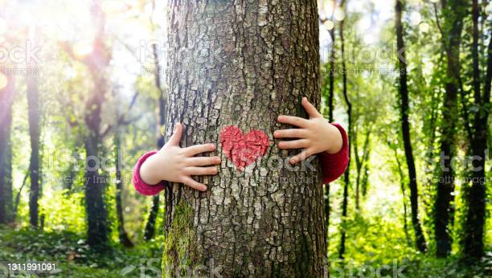
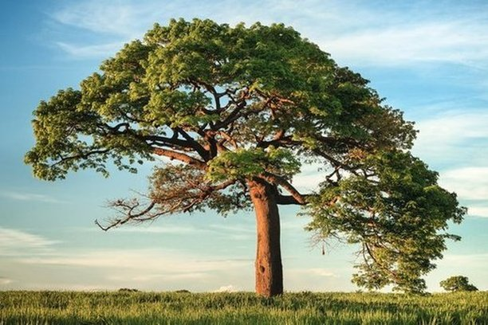

A natureza nos ensina que o fruto não depende apenas do cuidado com a árvore, mas na paciência de esperar que ela cresça e amadureça. Minha natureza é livre, mas o meu coração quer "pertencer".
A natureza é sábia conselheira e sempre inspira a solução de problemas. Quando nos aproximamos da natureza com o estado de espírito adequado respeito, calma, humildade, entrega, ela compartilha muitos de seus segredos.
